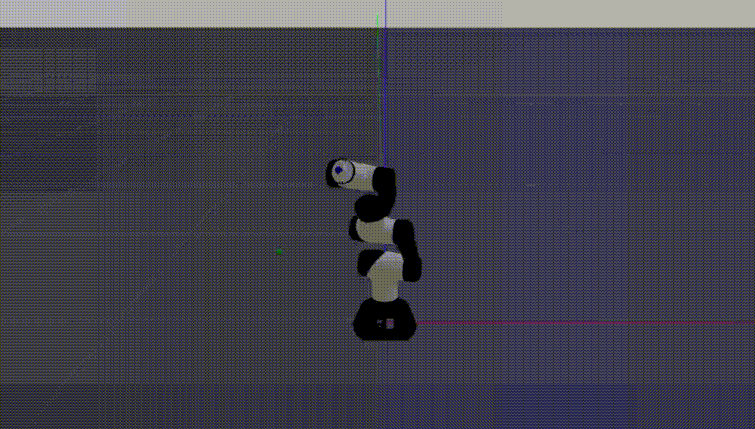

Autonomous Mobile Robot for Exploration
A comprehensive exploration system for autonomous mobile robots featuring advanced perception and localization.
Key Components
Pose Graph SLAM
Developed robust pose graph optimization leveraging 2D LiDAR sensor data for accurate mapping and localization.
AMCL Localization
Implemented Adaptive Monte Carlo Localization to achieve precise robot positioning within mapped environments.
Visual SLAM
Integrated RTAB-MAP for real-time camera-based SLAM and high-quality point cloud generation.
Frontier Exploration
Implemented autonomous frontier-based exploration algorithm for complete environmental mapping.
Technical Details
Technologies: ROS, Gazebo, LiDAR, OpenCV, Point Cloud Library (PCL), RTAB-MAP
Key Algorithms: Pose Graph Optimization, AMCL, D-SLAM, Frontier-based Planning
Applications: Search & Rescue, Warehouse Automation, Autonomous Exploration

Robotic Arm Control with Reinforcement Learning
An advanced RL system for learning complex robotic manipulation tasks using policy gradient methods.
Key Components
PPO Algorithm
Implemented Proximal Policy Optimization for stable and efficient policy learning in continuous control tasks.
Gazebo Simulation
Built realistic simulation environment for robotic arm training with accurate physics and sensor modeling.
TensorBoard Monitoring
Comprehensive training visualization and performance analysis with TensorFlow integration.
Technical Details
Technologies: Python, TensorFlow, OpenAI Baselines, Gazebo, ROS
Algorithm: Proximal Policy Optimization (PPO) with continuous action space
Training: Multi-step trajectory collection, advantage estimation, policy update
Applications: Robot manipulation, task learning, autonomous control

Autonomous Weeding Robot
A fully autonomous agricultural robot that detects and eliminates weeds using deep learning.
Key Components
YOLOv5 Detection
Transfer learning on custom cotton/weed dataset for real-time plant classification and detection.
Embedded Deployment
Optimized model deployment on Raspberry Pi 4 for real-time inference at field speeds.
Sensor Fusion
IMU and encoder data fusion with PID control for accurate navigation and positioning.
Mechanical Design
Complete robot design from CAD to assembly including actuation for weed removal.
Technical Details
Technologies: Python, YOLOv5, TensorFlow, OpenCV, Raspberry Pi 4, Arduino
Computer Vision: Custom dataset creation, transfer learning, real-time inference
Control: PID control loops, sensor fusion, odometry estimation
Applications: Precision agriculture, crop management, autonomous farming
{kind=link}

Quadruped Robot Development
A 12-DoF quadruped robot developed at IIT Jammu inspired by MIT's Cheetah Micro.
Key Contributions
CAD Design & FEA
Custom mechanical design with finite element analysis for structural optimization and durability.
3D Printing & Assembly
Prototype development using 3D printing with iterative design refinement for functional components.
Powertrain Design
Motor selection, gearing, and drive train engineering for quadrupedal locomotion.
Autonomous Navigation
IMU integration, ROS navigation stack, and autonomous path planning implementation.
Technical Details
Specifications: 12-DOF quadruped, inspired by MIT Cheetah Micro
Hardware: Custom 3D printed chassis, servo motors, IMU, encoders, Raspberry Pi controller
Software: ROS, Gazebo simulation, navigation stack, custom gait controllers
Applications: Legged locomotion research, terrain adaptation, autonomous navigation